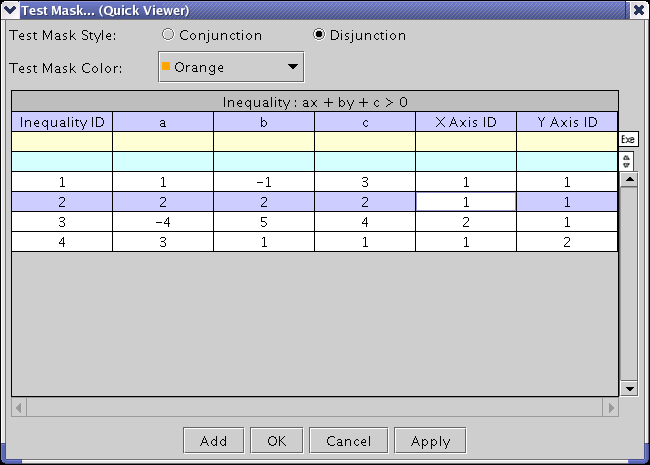

Mask Waveform
The Waveform Graphs Tool (WGT) allows users to mask an arbitrary area of a graph. Typically, a test mask is primarily used to represent some specified limitation. The test mask provided by the WGT can indicate the masked points (that imply usually the failed points) with an arbitrary color. The test masks are set up in the Test Mask dialog box as shown below.

In the WGT, each mask is regarded as an "inequality". Thus, in order to make a complex test mask, you need to overlay multiple inequalities.
Test Mask Style - A test mask that consists of multiple inequalities must be specified as conjunction (AND) test mask or disjunction (OR) test mask. If the selected Data Display Panel has multiple masks, the masked points are determined based on the masks and this selection.
Test Mask Color - The masked points (or areas) will be highlighted with this color.
The following fields are required when creating a test mask as an inequality.
Inequality ID - Specify an identifier (numeric value: 1, 2, 3, ...) of each mask.
X Axis ID - If the selected Data Display Panel has multiple x-axes, you must specify on which x-axis the mask is placed.
Y Axis ID - If the selected Data Display Panel has multiple y-axes, the users need to specify which y-axis the mask is put on.
Equation: ax + by + c > 0 - Specify the variables of the inequality to be masked.
In the WGT, a test mask is represented as simultaneous inequalities.
The solution to inequalities is masked with an arbitrary color. The other points (or areas) are not masked. If you define complex inequalities according to the specification of a test device, you can create a complex test mask such as the one shown below.